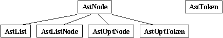
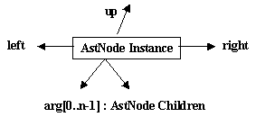
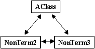

|
|
Internal Representation of AHEAD Abstract Syntax Trees/Parse Trees |
This section presents the low-level, programmatic capabilities AHEAD offers for creating and manipulating abstract-syntax trees (ASTs) of Java and extended-Java programs. While the discussion centers on Java dialects, the basic technology applies to all AHEAD-produced languages.
AST Node Hierarchy |
AHEAD relies on a hierarchy of different kinds of AST nodes. The kernel hierarchy is shown in the figure below, where AstNode is the root of the AST class hierarchy; all tokens are instances of AstToken.
Note that all Bali-generated classes are subclasses of AstNode.
Structure of an AST Node |
An AstNode has an array (arg) of zero of more children (of type AstNode), a left and right to connect a node with its siblings, and an up pointer to its parent. Not depicted is an array (tok) of zero or more tokens. The up pointer is null if an AST node has no parent; left is null if there is no left sibling, and similarly for right. A terminal node of an AST has (obviously) zero children; the arg array is null.
In general, programmers need not know about these pointers, although it may be useful information. The code below sketches the definition of the AstNode class (which is defined in the kernel layer).
static public abstract class AstNode implements Cloneable, Serializable {
public Token[] tok;
public AstNode[] arg;
public AstNode right;
public AstNode left;
public AstNode up;
...
}
Relationship of AST Nodes to Bali Productions |
AST classes are generated from Bali grammar specifications. Consider a Bali production that is a named rule:
NonTerm1 : TOKEN1 NonTerm2 TOKEN2 TOKEN3 NonTerm3 :: AClass ;
Bali generates a class called AClass that is instantiated whenever the pattern associated with AClass is recognized. The AST that is produced is shown to the right: an instance of AClass roots an AST that has two children: an instance of NonTerm2 and an instance of NonTerm3 (both objects of which are siblings of each other). The contents of the arg[] array and tok[] array is:
arg[0] = // pointer to NonTerm2 instance arg[1] = // pointer to NonTerm3 instancetok[0] = // pointer to TOKEN1 instance tok[1] = // pointer to TOKEN2 instance tok[2] = // pointer to TOKEN3 instance
How is an AST printed? |
How an AST is printed can be answered in two levels of detail. In the most detailed, we'll see the information that is stored within an AST node for printing. In the more typical interpretation, click here to see the standard idioms to use when programming in AHEAD.
Print Information Stored in AST Nodes |
In order to print the AST rooted at the AClass node (or any node for that matter), we need to be able to print each subtree and each of the nodes tokens in the order prescribed by the AClass named rule. This is accomplished by a boolean array order[] which specifies the interweaving of token and subtree printing. In the AClass example above:
boolean order[] = { true, false, true, true, false };
That is, order[0] means print the first token (tok[0]), order[1] means print the first subtree (arg[0]), order[2] means print the second token (tok[1]), and so on. The order array is generated by Bali and is otherwise unseen by users.
Note also that tokens store both the text of the token plus the white space (comments, new lines, etc.) that preceded the token during a parse. In this way, it is possible for AHEAD-produced precompilers to parse an input file and unparse it to produce an output file that is Unix-diff equivalent to the input file. (Stated another way, saving the white space allows one to transform programs while retaining comments. This is essential for tools that automatically modify programs which are subsequently hand-edited by programmers).
Below are methods that are useful for tokens. These methods are invoked by the pattern tok[i].method() -- meaning apply method() to token #i:
| void setTokenName(String x) | set the token string to x |
| String getTokenName() | returns string of token #i |
| int linenum() | returns line number on which the token appeared |
| void print() | prints the token and whitespace |
| void reduce2java(AstProperties p) | reduces to Java (prints token) |
| void reduce2ast(AstProperties p) | generate code that will create this token |
Normalizing Trees |
In general, AHEAD allows no sharing of AST subtrees - i.e., multiple parent nodes point to the same child AST subtree. Now, sharing subtrees is too easy to do in AHEAD metaprogramming:
AST_Exp e = exp{ 4+5 }exp;
AST_Stmt s = stm{ System.out.println( $exp(e), $exp(e)); }stm; //sharing!
The above code is not correct if it is to be subsequently manipulated. (If it is merely to be printed, then tree sharing is OK). One fix to the above code would be to clone each AST before linking it in.
AST_Exp e1 = (AST_Exp) e.clone();
AST_Stmt s = stm{ System.out.println( $exp(e), $exp(e1)); }stm;
Another and simpler is to normalize the tree. The normalize method walks a tree and locates shared subtrees; it clones each shared subtree so that the resulting AST has no tree sharing.
AST_Exp e = exp{ 4+5 }exp;
AST_Stmt s = stm{ System.out.println( $exp(e), $exp(e)); }stm; //sharing!
s.normalize(); // tree sharing removed
Detaching Trees |
Occasionally it is useful to detach a subtree from an AST. (That is, all parent and sibling linkages are removed). A typical application is that the detached tree is to be serialized to disk for some later retrieval and manipulation. The following idiom illustrates the usage of Detach.
// let a be the node that is to be detached from an AST // and is to be written to file "myfile"a.Detach(); a.writeTree("myfile");
Methods on AST Nodes |
The following are methods that can be performed on AST nodes.
| Method | Semantics |
| String toString() | convert tree rooted at AST node to its string representation |
| Object clone() | clone tree rooted at AST node (Note: you must cast the result to the appropriate type before use) |
| AstNode hasAncestor(String classname) | progress up the AST looking for a parent node that is an instance of classname (or an instance of some derived class) |
| void PrettyDump() | dump the contents of an
AST (useful for debugging) |
| void dumpnode() | useful for debugging small ASTs |
| AstNode Replace(AstNode withnode) | Replace(k) swaps "this" with node k. Replace returns k as a result. |
| void print() | unparses the contents of the AST rooted at "this" node |
| void print(AstProperties props) | unparses "this" tree and outputs the result to file specified in props |
| reduce2java(AstProperties props) | prints the Java code
that is defined by the Jakarta AST that is rooted at "this" node |
| boolean Equ( AstNode x ) | return true if tree rooted by x is equal to "this" |
| void Delete() | delete the current node; node must be an element of some list structure |
| void add( AstList tree ) | adds tree after the current node. (Note: "this" must be an AstList). |
| void add( AstList tree, String separator) | just like add (above), but the separator is also specified. Useful for comma-separated lists. |
| void AddAfter(AstList tree) | add tree after
"this" node; "this" node must be an element of some list structure |
| void AddBefore(AstList tree) | add tree before
"this" node; "this" node must be an element of some list structure |
| AstNode addComment(String comment) | is method appends the
comment given by the parameter to the first AstToken |
| AstNode addComment(String comment, boolean replace) | optionally add or replace comment in front of first token |
| void appendComment(String x) | add comment x to the specified tree after the first white space; tree must have a token in it |
| void prependComment(String x) | add comment x to the specified tree before the first white space; tree must have a token in it |
| AstNode normalizeTree( ) | This method is used to repair ASTs that share subtrees which might have been created during sloppy metaprogramming. The idea is to walk the tree looking for nodes that don't point to their parent. In such cases, the subtree is cloned and the result is that normalized trees don't have shared subtrees |
| void Detach() | Detach isolates a subtree from its left, up, and right node relations. Useful for disconnecting a tree from an existing tree |
| void writeTree( String fileName ) | serializes an AST to a file (filename.ser); make sure AST is detached before calling writeTree() |
Copyright © Software Systems
Generator Research Group. All rights reserved.
Revised: April 17, 2003.